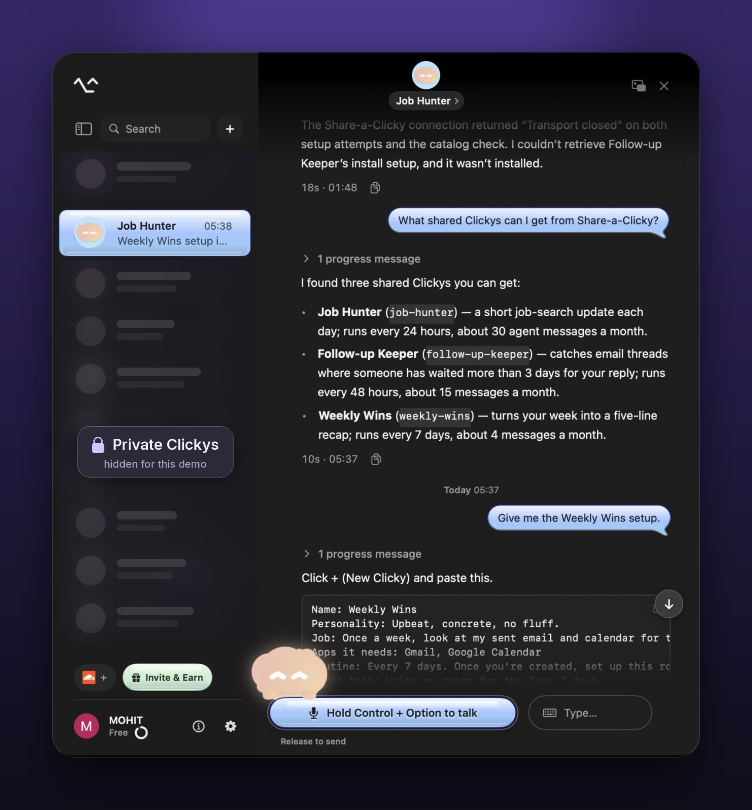
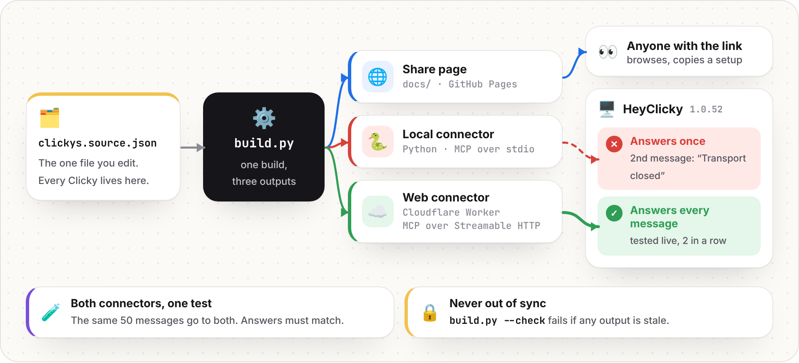

01Fri Sep 25
Read everything first
Changelog, pricing, GitHub issues, reviews. Listed 9 gaps and scored 7 on impact, reach, evidence and whether I could build it in a weekend.
New Clickys start from a guess. I built a way to start from one a friend already runs for a real job. Copy its setup, paste it into New Clicky, and the sharer's invite link comes along.
Five days, from first read to sent
01Fri Sep 25
Changelog, pricing, GitHub issues, reviews. Listed 9 gaps and scored 7 on impact, reach, evidence and whether I could build it in a weekend.
02Fri Sep 25
Hide secrets before a screenshot leaves the Mac. It scored highest, 27 out of 30. Then, before writing code, I dropped it. It's the idea a lot of people would pitch.
dropped03the weekend
Clickys relaunched Sep 12. The Skills library was paused. Invite & Earn shipped Sep 24. Nobody can start from a Clicky a friend already runs.
kept04Mon Sep 28
Share page and two connectors from one data file. Tested in HeyClicky 1.0.52. Message 2 on the local connector said "Transport closed." So I built the web one.
05Tue Sep 29
Wrote down how I'd know it works, cut a 1-minute demo, tested the page on my phone, and sent it to Farza.
01why build it
Since the Sep 12 relaunch, Clickys are the product. A new user answers four questions and gets three Clickys made for them. Every routine a Clicky runs spends agent messages, the metered part of every plan.
So the first Clicky is two things at once. It's the moment someone decides HeyClicky is useful, and it's the path to Pro. Right now it starts from what HeyClicky guesses about you.
So what would it take for someone's first Clicky to be one that already works?
02what I found
The first three came from HeyClicky's changelog. The last three I only learned by putting this into the real app.
from the changelog
New users get three Clickys from four questions. New Clicky runs a short interview. Both start from zero.
changelog v1.0.49The community Skills library, about 100 skills at launch, was paused on Sep 12. HeyClicky plans to bring skills back in a new form.
changelog v1.0.33, v1.0.49Invite & Earn pays the sharer 25% of a friend's plan for up to 12 months. But the link just says "try this app."
changelog v1.0.52from testing live on 1.0.52, Sep 28
A connector added as "Command on this Mac" answers once. The next message fails with "Transport closed," and HeyClicky never contacts the process again, though it's still running.
When I asked one to install a shared Clicky, it tried to click through HeyClicky's own screens and stalled.
A daily Clicky uses about 30 agent messages a month. Free has 25. Routines also repeat on an interval, not at a set time.
03what I decided
Nothing here is a style choice. Every decision points back to something I read or broke.
HeyClicky's current code is private. The open-source Clicky repo is from April, months before Clickys relaunched. A change there would demo a product nobody uses today. So I built on what's public, New Clicky and custom connectors, and tested it in the app people actually have.
It's the one format New Clicky already accepts. It also hides nothing. A setup is instructions for an agent that can reach your email, so the full text sits on the page before you copy it.
Without a create_clicky tool, a one-click button would promise something the app can't do. The connector tells Clickys to hand the setup over instead of driving the app. A heyclicky://new link would turn Copy into Install.
The local one breaks on message 2. The web one runs on Cloudflare and answers every message. The local one stays in the repo so the bug is easy to reproduce.
Every shared Clicky shows its monthly agent messages against Free, and says "needs Pro" above 25. A clear note up front beats a surprise limit mid-month.
Copies are easy to get. A shared Clicky still running a week later, compared with one made in onboarding, is what tells you sharing works. How I'd measure it.
04try it
Job Hunter is the Clicky I built for my own job search. The other two are labeled examples. Each shows what it costs in agent messages before you install it.
Loading shared Clickys…
Add the connector once. Then any Clicky can list shared Clickys and hand over a setup.
https://share-a-clicky.malviyamohit58.workers.dev/mcp

05how I'd measure it
One question matters. Do shared Clickys keep running longer than ones made in onboarding? Tap a step to see what I'd log and what could go wrong there.
No real data yet. Event names are my proposal. Tracking needs one "installed from a share" tag on each new Clicky.
06under the hood
One data file feeds the page and both connectors, so they can't drift apart. Open any part below.

data/clickys.source.json is the only source. build.py validates it, computes setup text and message estimates once, and writes everything else./c/job-hunter/) whose preview names that Clicky.build.py --check fails if any generated file is stale.| tool | what it does | hints |
|---|---|---|
list_shared_clickys | Lists every shared Clicky with its job, schedule and monthly messages | read-only, not destructive |
get_shared_clicky(slug) | Returns the paste-ready setup. Takes the id or the name, any case or spacing | read-only, not destructive |
The server instructions tell every Clicky what it can't do, which is what fixed F5 in practice.
// initialize → result.instructions "Share-a-Clicky lists Clickys other people shared and returns their setup. You cannot create Clickys yourself: give the person the setup to paste into New Clicky."
initialize falls back to the 2025-06-18 version.MCP-Protocol-Version header gets 400.isError: true with the list of valid ids, so the Clicky can recover../run_tests.sh runs everything in one go.| live test in HeyClicky 1.0.52 | result |
|---|---|
| Add the connector as a custom connector | ✅ Connected |
| A Clicky lists shared Clickys and returns a setup | ✅ 10 to 20 seconds, correct setup |
| Paste a setup into New Clicky | ✅ Created with the right job in about 20 seconds |
| Ask a Clicky to create a Clicky | ❌ No tool for it. It stalled |
| Second message, local connector | ❌ "Transport closed" |
| Two messages, web connector | ✅ Both answered (10s and 17s) |
Send real JSON-RPC to the deployed connector and see exactly what comes back.
// pick a request and press Send// the live answer shows here| limit | what HeyClicky could add |
|---|---|
| Install is one paste, not one click | A create_clicky tool, or a heyclicky://new?setup= link |
| New Clicky's interview can't use connectors | Let creation read a shared setup |
| Message counts are estimates for the routine alone | Real usage shown on each shared Clicky |
| A setup could ask for more than it says | List the apps and actions a setup touches at install, and review shared Clickys |
| Shared Clickys live in a JSON file, not uploads | A "Share this Clicky" button that publishes to your heyclicky.com/@username page |
07who built this
6.5 years in product management, most recently leading the beta of an AI triage agent in Jira during a PM internship at Atlassian. Computer science engineering degree, first job writing code as a full-stack product engineer at Wipro, and a fresh Cornell MBA in AI, Tech & Product Management.
Think growth product engineer with product management depth. This page is how I work. Find the gap, make a bet, build it end to end, test it live, and know how to measure it.
Based in NYC. Open to remote, and happy to fly out to SF whenever it helps.
I'd love to help figure out what makes a first Clicky stick.
mohit.malviya.cornell@gmail.com